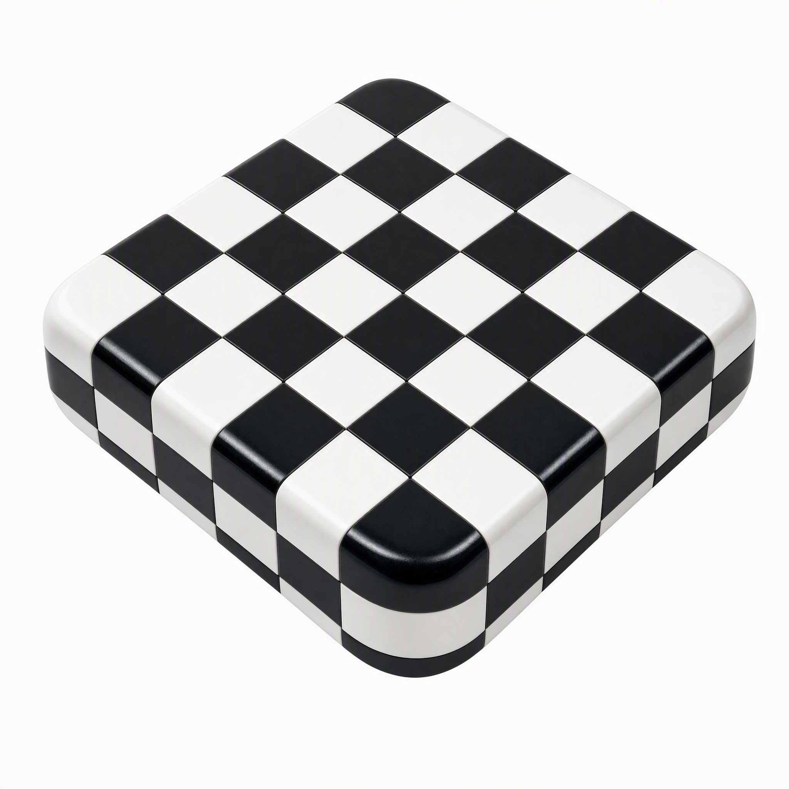

Zoo
Thick ivory picture cards, sage backs and a warm bear print.
Owner-approved native Sunburst image, 2048 × 2048; finishing 01. Approved raw artwork; source adoption and deployment are tracked separately.

Composition and material
A complete fan of three rounded picture cards translates picture browsing into a physical tool. Continuous paperboard shading and printed bear colors stay unchanged. A separate sage paper field, card-corner impressions and soft shadows support the object.
All cards use a uniform 80% placement. Measured rounded-outline clearance is 271.5 native pixels; no pixels are clipped.
Size checks


At 24/16 px, the silhouette and dominant color carry recognition; fine paper fibers and printed facial details soften. Small UI and browser marks use transparent foregrounds without a tile or another mask.
Application roles
Transparent 24 px expanded or collapsed navigation mark.
Illustrative identity specimens, not proof of a released application.
Native palette evidence
Independent background and placement recipes: presentation.json. Source UI tokens remain unchanged.
Transparent edge checks


Downloads and provenance


Exact prompt
Create one compact, beautiful physical-object Logo for Zoo, a gentle picture-learning website used by young children with their parents: a small fan of three thick rounded picture cards, captured at the quiet moment one card turns aside to reveal the next. The front warm-ivory card carries one simple friendly ochre bear face printed into the paper, with generous breathing room around the illustration; the other cards reveal a muted jade-green back and a small warm golden edge. The cards are the primary object, not a three-dimensional animal mascot. Let the exact overlap and tilt feel natural and distinctive, with a clear iconic silhouette. Show believable layered paperboard edges, fine matte fibers and subtly rounded corners. Warm, sophisticated, tactile, not shiny plastic. No lettering, numbers, brand name, binding ring, detached props or classroom scene. Reference 1 establishes the collection's convincing high-resolution physical materials and clean edges only: do not copy its checker pattern, ceramic block, colors or shape. References 2 and 3 establish the owner's restrained tactile presentation and breathing room, not the subject or background. Use a gentle 75 mm three-quarter product-camera analogy, approximately 35 degrees elevation, with the entire compact card assembly sharp and physically credible. The full silhouette should occupy about three quarters of the square, slightly off center with generous clear margins. This is the material series: continuous natural volume and shading, not a flat vector icon, fragmented animal, voxel object or pre-rounded app tile. Return one native 2048 by 2048 PNG. Isolate the complete opaque card assembly on perfectly uniform pure-white #FFFFFF. Keep every card corner complete and comfortably inside the canvas. Distinguish warm ivory card faces from the white matte with clear physical contours; their paper surfaces must remain opaque. Internal contact shading between overlapping cards is appropriate. No ground plane, projected ground shadow, horizon, external glow, haze, translucent fringes, frame, watermark or background texture. Background and presentation shadows will be composed separately after approval.
View the presentation references



Reference order and exact hashes are in request.json. These guide physical rendering and restraint, not Zoo's identity or source palette.
Owner approval · Generation receipt · Native samples · Checksummed finishing archive